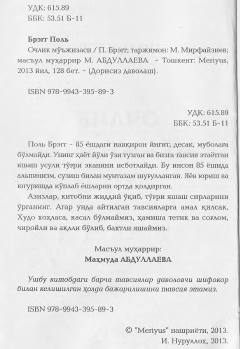

OMTabiiy usullar va ochlik yordamida organizmni yoshartirish hamda sog'lom saqlash sirlari.
Ushbu kitob inson organizmini tozalash, uzoq umr ko'rish va sog'lom turmush tarzini yo'lga qo'yishda ochlikning ahamiyati haqida hikoya qiladi. Muallif Pol Bregg o'z tajribasi va ilmiy kuzatishlari asosida to'g'ri ovqatlanish hamda tabiiy usullar yordamida kasalliklarning oldini olish yo'llarini o'rgatadi. Kitob sog'lig'ini mustahkamlash va jismoniy tetiklikni saqlashni istagan barcha kitobxonlar uchun mo'ljallangan.